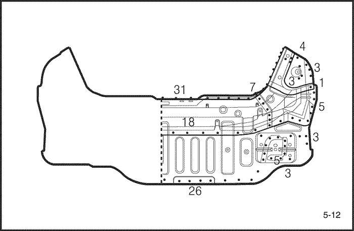
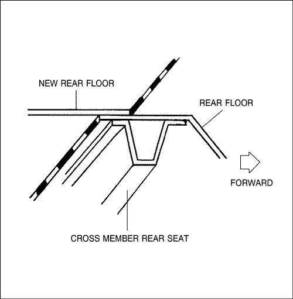

- Retire las piezas relacionadas.
- Piezas a retirar cuando se retire el panel trasero.
- Cinturón de seguridad trasero y el asiento trasero.
- Silenciador, depósito de combustible y piezas relacionadas.
- Piezas del chasis.
- Otras piezas relacionadas.
Precaución: No fume mientras trabaje cerca del sistema de combustible. Mantenga las llamas vivas alejadas del sistema de combustible. Si fuera necesario, retire el depósito de combustible y líneas de salida.
- Extraiga completamente y enderece la zona dañada.
- Compruebe los daños y extraiga para reparar el panel trasero relacionado, el panel lateral, el interior del alojamiento de la rueda, el longitudinal trasero y otras piezas dañadas con el enderezador de bastidor antes de retirar el panel de suelo trasero de extensión, el panel de suelo trasero y el panel trasero.
- Coloque el coche en el enderezador de bastidor fijando las pinzas del chasis inferior situadas en los puntos de izado con gato de la parte inferior de la apertura de puerta de bastidor.
Nota: Mida en referencia a las dimensiones incluidas en la tabla de reparación de la carrocería .
- Corte y levante el panel trasero.
- El panel trasero a cortar y levantar cuando retire el panel trasero.
- Corte y levante el suelo trasero y el panel de suelo trasero de extensión.
- Corte el suelo trasero y el suelo trasero de extensión con un soplete de gas o un escoplo neumático dejando las bridas de soldadura del longitudinal trasero por la línea gruesa de la siguiente figura.
Nota: Corte el suelo trasero a 15mm (0,59 pul.) desde la brida soldada del asiento trasero del travesaño.
- Marque con punzón alrededor de las impresiones de la soldadura por puntos con el longitudinal trasero, el longitudinal trasero de extensión y la placa de refuerzo.
- Utilice un cortador de puntos de soldadura especial para taladrar orificios en los puntos de soldadura en las zonas de punzonado.



Nota: Cuando realice los taladros tenga cuidado de no perforar hasta los propios longitudinal trasero, longitudinal trasero de extensión y la placa de refuerzo.
- Corte y levante el resto del suelo trasero y del panel de suelo trasero con un escoplo neumático, dejando intactas las bridas de soldadura.
- Nivele y alise las rebabas de los puntos de soldadura levantados con una lijadora de disco y repare todas las grietas, orificios u otros defectos mediante soldadura, reparando también el longitudinal trasero y el longitudinal trasero de extensión, si fuera necesario.
Precaución: Para evitar lesiones en los ojos, utilice guantes de seguridad siempre que lije, corte o amole.

- Pele la capa interior y el sellador.
- Aplique calor a la capa interior y al sellador en las zonas de soldadura con un soplete de gas y pele la capa interior y el sellador con una espátula de acero.
- Piezas del moldeo dañadas relacionadas.
- Utilice un martillo y un sufridor para moldear las zonas dañadas del longitudinal trasero y el longitudinal trasero de extensión.
- Alise las bridas de soldadura con un martillo y un sufridor.
- Rellene cualquier orificio realizado mediante la soldadura.
Precaución: Para evitar lesiones en los ojos y quemaduras al soldar, utilice un casco de soldador adecuado, guantes y calzado de seguridad.
- Nivele y elimine la rebaba de los puntos de soldadura levantados con una lijadora de disco.
- Lije la pintura y el revestimiento inferior de ambos lados de la brida a soldar.
- Corte el nuevo suelo trasero para alinearlo con la carrocería, luego coloque el nuevo suelo trasero y el suelo trasero de extensión.
- Corte la nueva pieza de forma que se solape con el asiento trasero del travesaño aproximadamente unos 40mm (1,57 pul.).

- Amole ambos lados de la sección de soldadura del suelo trasero y del suelo trasero de extensión usando una lijadora de disco para retirar la pintura y dejar expuesta la plancha de acero.
Precaución: Para evitar lesiones en los ojos, utilice guantes de seguridad siempre que lije, corte o amole.
- Ajuste y fije el nuevo panel en su lugar con la mordaza de sujeción.
Nota: Se recomienda el uso de plantillas para la colocación correcta y compruebe que ambos longitudinales traseros son paralelos.
- Suelde por puntos la sección embridada para una instalación temporal.
Precaución: Para evitar lesiones en los ojos y quemaduras al soldar, utilice un casco de soldador adecuado, guantes y calzado de seguridad.
- Retire las mordazas de sujeción e instale temporalmente el panel trasero, luego compruebe la alineación, niveles las diferencias y el aspecto exterior.
- Retire la soldadura principal.
- Suelde el suelo trasero y el asiento trasero del travesaño con soldaduras de cordón con soldador MIG, tal como se muestra.

- Suelde por puntos el suelo trasero y el suelo trasero de extensión con las zonas de brida del longitudinal trasero y las bridas de la placa de refuerzo tal como se ilustra.
Precaución: Para evitar lesiones en los ojos y quemaduras al soldar, utilice un casco de soldador adecuado, guantes y calzado de seguridad.
- Realice, en primer lugar una soldadura de prueba y compruebe la condición de la misma.
- Aumente el número de puntos en un 20% para zonas en las que se realizará soldadura por puntos.
- Suelde el panel trasero
- El panel trasero a soldar cuando se sustituya el panel trasero .
- Realice el acabado de la zona de soldadura.
- Nivele las zonas de soldadura MIG con la lijadora de disco, luego alise las zonas altas con un martillo, teniendo cuidado de no deformarlas.
Precaución: Para evitar lesiones en los ojos, utilice guantes de seguridad siempre que lije, corte o amole.

- Utilice un martillo y un sufridor para alisar las zonas de soldadura por puntos y lograr un ajuste preciso con la superficie de la brida.
- Aplique el sellador.
- Aplique sellador a las zonas solapadas del suelo trasero y del suelo trasero de extensión y las superficies soldadas del panel de contacto, sellando todos los huecos completamente.
- Aplique la capa interior.
- Aplique revestimiento inferior al alojamiento de rueda trasero y al suelo del piso designado.
- Aplique la pintura
- PRECAUCION
- Ventile la zona cuando pinte con pulverizador. La mayoría de las pinturas contienen sustancias perjudiciales si se inhalan o ingieren. Lea la etiqueta de la pintura antes de abrir el contenedor de la misma.
- Evite el contacto con la piel. Cuando pinte use un respirador adecuado, guantes, protección ocular y una ropa adecuada para el trabajo.
- La pintura es inflamable. Guárdela en un lugar seguro y manténgala alejada de chispas, llamas o cigarrillos.
- Aplique el atenuador.
- Limpie el compartimento de pasajero y el del maletero.
- Aplique el atenuador a la superficie del suelo trasero y del suelo trasero de extensión.

- Instale las piezas relacionadas.
- Instale las piezas en el orden inverso al que se retiraron.
- Comprobar y ajustar
- Compruebe las distancias y equilibre las diferencias.
- Compruebe el estado de bloqueo y desbloqueo del maletero.
- Compruebe el funcionamiento completo.
- Compruebe posibles fugas de agua en el compartimento del maletero.
Nota: Use la hoja de comprobación especificada para la comprobación adecuada del funcionamiento.